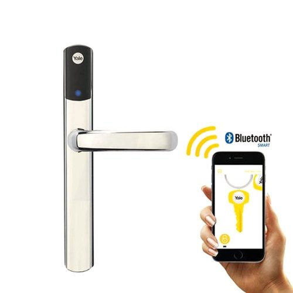
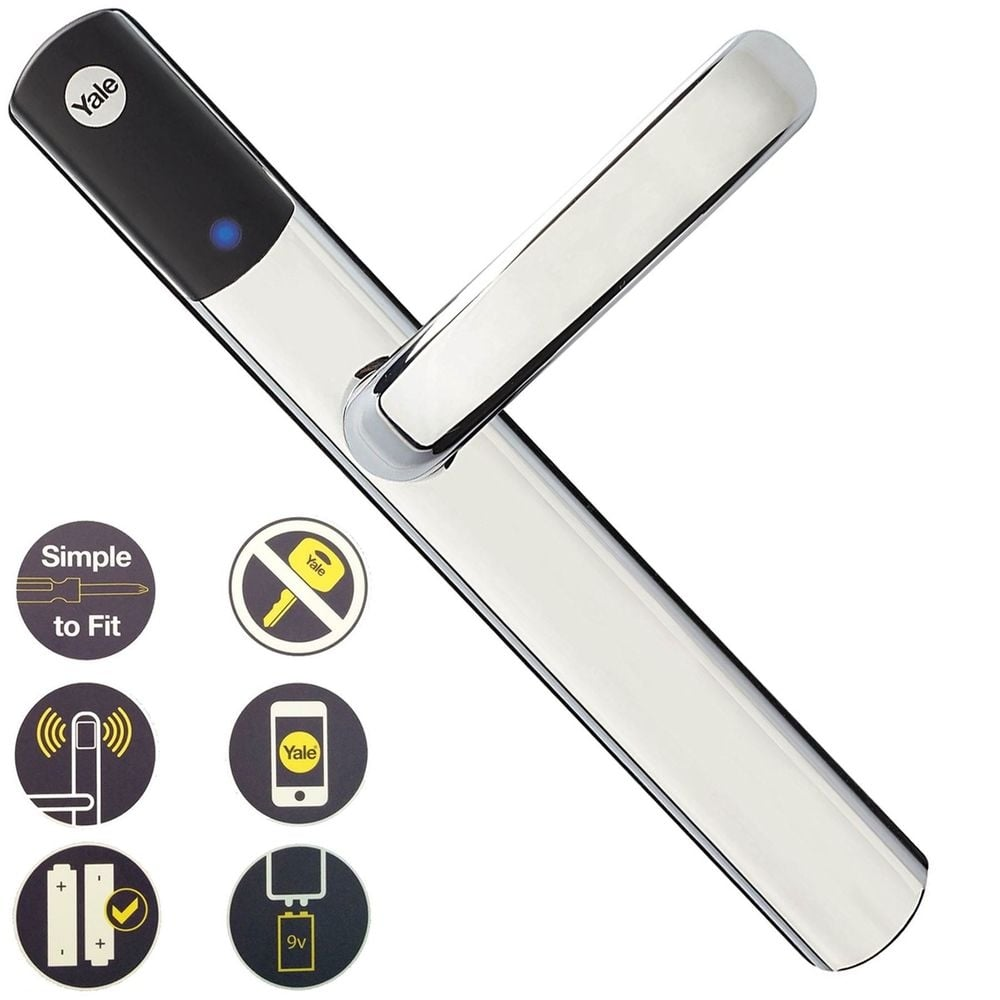

Yale Conexis TM l1 SmartDoor Lock - Smarthome
Yale Conexis TM l1 SmartDoor Lock - Smarthome
- Erwin Leo Sinaga (161112782)
- Tia Sarwoedhi (161113893)
- Owen Brendsan Damanik (161113117)
- Mery Sartika Simamora (161113613)
Nama Kelompok :
Yale Conexis TM l1 SmartDoor Lock - Smarthome
Deskripsi
Kunci pintu digital Yale menghadirkan kenyamanan tanpa kunci untuk membuka kunci pintu Anda. Pilih dari teknologi penguncian pintu digital terbaru - sidik jari, kartu pintar atau keypad - untuk membuka pintu Anda. Masing-masing menawarkan solusi pembukaan pintu langsung dan menambah kesederhanaan gaya hidup Anda. Kunci pintu digital ini juga dapat dipasangkan dengan alarm untuk menawarkan keamanan tambahan dari pencurian, perusakan dan kebakaran. Menggabungkan teknologi mutakhir dengan keandalan praktis, kunci pintu digital Yale adalah masa depan dari kunci pintu..
Fungsi
Fungsi Yale Conexis Smartlock sebagai handle pintu , tarikan pintu pada pintu utama, tetapi kadang handle pintu ini juga sering dipakai sebagai pegangan pada pintu teralis rumah dan pintu kamar yang berfungsi untuk memperindah tampilan luar dari pintu itu sendiri.
Kelebihan dan Kekurangan
Pro:
- IP55 tahan cuaca
- Sertifikasi PAS 24
- Dapat Beroperasi di suhu -15 ° C hingga 55 ° C
- Desain dan pembuatan premium
- Lebih murah daripada Nuki
- Banyak opsi membuka kunci
- Konsumsi daya rendah - Baterai bertahan hingga 1 tahun
- Modul untuk meningkatkan fungsionalitas
- Berfungsi dengan baik bila diatur dengan benar
- Garansi 2 tahun
Contra
- Pengaturan dapat menjadi rumit
- Opsi cadangan baterai canggung
- Tidak ada fallback ke kunci fisik
Spesifikasi produk
- Panjang : 3.15 inci
- 4 Baterai X AA
- Tinggi : 11.02 inci
- Lebar : 1.18 inci
- Berat : 4.63 lb
Video
Responsive Slides
Powered by bespoke-scale
Bullet List
Powered by bespoke-bullets
- Bullet 1
- Bullet 2
- Bullet 3
Syntax Highlighting
Powered by Lea Verou's Prism
(function() {
function hanoi(n, a, b, c) {
return n ? hanoi(n - 1, a, c, b)
.concat([[a, b]])
.concat(hanoi(n - 1, c, b, a)) : [];
}
return hanoi(3, 'left', 'right', 'mid')
.map(function(d) {
return d[0] + ' -> ' + d[1];
});
})();Named Route
Powered by bespoke-hash
Look up! This route has been named with a data-bespoke-hash attribute.
Just the beginning…
- Edit HTML markup in src/index.html
- Edit Stylus styles in src/styles/user.styl
- Edit JavaScript in src/scripts/main.js
- Enjoy! :) -@markdalgleish